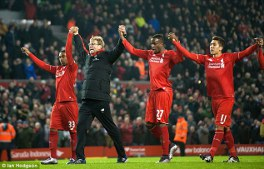
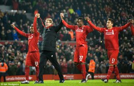

Як і про Бентеке, так і про Юргена Клоппа я довгенько не міг скласти враження. Це певно і стало причиною "мовчання" на цю дуже цікаву тему. Врешті-решт, можна поділитись враженнями про його прихід крізь призму завершеного сезону. Про призначення ЮК не говорив тільки лінивий. Я - лінивий. Був у мені якись страх не наврочити, хоча я ніби і не забобонний. Оскільки про його призначення оголосили під час перерви на матчі збірних, у нього було хоч трохи часу познайомитись із командою. Перший матч був проти Тотенхема, який уже набирав серйозні оберти, тому було лячно. В таких матчах тактика відіграє не найпершу річ. Будь-які потрясіння на тренерському містку зазвичай супроводжуються мегавіддачею підопічних, власне тому розгледіти якісь інноваційні рішення не вдалось, як і подивитись гарний футбол. Деніел Тейлор назвав це "футболом десяти Мілнерів" - дуже влучна фраза. Підопічні тепер уже німецького наставника пробігли більше за Шпор, якій за цим показником йшли першими в лізі. Єдиний момент, який варто виділити після зустрічі - це буде енергозатратний футбол із пресингом та його "геген" версією. Проти суперників рангом нижче це мало забезпечити, як мінімум, повне домінування. Але не все пішло як по-маслу. Суперники в обличчі Рубіна та Саутгемптона здобули по одному пункту насправді у схожій манері - скористались слабкою оборонною ланкою та відсутністю повного контролю над грою власне Клоппом Важливіший момент, як на мене, трапився у матчі проти Борнмута на Кубок Ліги: Юрген використав дублюючий склад і вижав із нього максимум. Очевидно він зрозумів, що на острові він витисне із хлопців усі соки дуже швидко, змушуючи грати одних і тих же на усі фронти. Разом з тим, відвертий резерв не розчарував, і що найголовніше, намагався грати за новими вимогами. І хоча серія травм, що буде лише згодом (яка цілком можливо була пов'язана із шаленим темпом навіть на тренуваннях), уже не давала боятись робити ротацію, нехай і не повноцінну. Та й для прогляду теоретичних основних був підходящий шанс. Далі було уже значно цікавіше. При усій повазі до Тотенхему, але матч проти Челсі мав яскравішу афішу, а тому і сприймався важливіше. І хоча на могилі танцювати не зовсім правильно, але це була драйвова перемога. Таких в сезоні було не багато, із найближчих слід віднести і перемогу над Ман Сіті. Підопічні Юргена виходили на матч в статусі андердога та із спітнілою посмішкою громили суперника (в першу чергу по грі, а не по результату). Перемогу над Рубіном на виїзді я б відніс до перемог на класі, яких також було не рясно. Це той випадок, коли можна сказати, що розгромили суперника 1:0 (хоча рахунок ніби говорить про інше). Загалом, перших матчів 10 були по-своєму цікаві та особливі, тому-то і доводиться хоча б кілька слів, але сказати про кожен з них. Звісно ж, виділялась на цьому райдужному фоні поразка Крістал Пелесу вдома. Це був той перший і особливий раз, коли герр Норберт явно недооцінив середняка АПЛ. Після чергової перерви на матчі збірних, трапилась не рядова перемога на виїзді над Сіті. Тримаючи вищезгаданий матч із КП (та частково із Сотоном), було здобуто уже дві мінімальні перемоги над Бордо та Суонсі, коли організації вистачило від стартового до фінального свистка. Частково сюди ж можна віднести перемогу над Святими в Кубку Ліги, коли на пропущений гол на першій же хвилині глядачі на Сент Меріс бачили лише одну команду. Бувають такі дні, коли залітає фактично усе. Ще один тип ведення матчу було продемонстровано фактично зпідряду. Тепер кривдниками червоних виступили господарі Сент-Джеймс Парку та Вікерейдж Роуд. Поєднує ці дві поразки продемонстрована вперше (і майже відразу вдруге) безпорадність, причому повна. В обох випадках господарі демонстрували відразу свої сильні сторони та, таке відчуття, просто подавляли суперника, що певно вирішив здобути очки не застосовуючи усі циліндри двигуна. Так звані "сенсації" в АПЛ трапляються саме в таких випадках, коли у складі більш іменитого суперника не знаходиться хоча б пари гравців, які щосили намагаються завести партнерів. Між цих дуелей встигли втиснутись дві різні нічиї. І якщо у Швейцарії головне було не програти, то проти кого, як не проти команди Тоні Пьюліса відчути весь кайф домашньої підтримки із зрівняним рахунком на 96-ій хвилині? Схоже трапиться згодом у матчі проти Арсеналу і досягне апогею в Норвічі. Чи то паростки харизматичності нового наставника, чи то кльов у одне місце лайверберда - достеменно невідомо. Далі була трохи парадоксальна ситуація, адже на боксінг дей прийшовся мало не пік кількості травм, але обидва матчі було виграно не по-святковому скромно. Причому обіграно міцних Лестер та Сандерленд. Трохи згодом Юрген дасть інтерв'ю, де порівнюючи Об'єднане Королівство та Німеччину скаже, що "Англія - це футбол, футбол, футбол". Такі емоції у нього викличе "не стандартний" календар внутрішніх кубків із переграваннями та проведені за 15 днів 5 поєдинків. Якщо прийняти за істину, що поразки дають більше корисної інформації, ніж перемоги, то наступний матч із розряду дуже калорійних. Вест Хем вдома не дав жодних шансів підопічним Клоппа, хоч як ті не старались не повторити долю матчів із Ньюкаслом та Уотфордом. Згодом такий трюк проверне Лестер на домашній арені і це одні з найкорисніших матчів з точки зору розбору за весь перший сезон тренера. Отож, у перші кілька місяців Юрген Клопп пережив фактично повноцінну палітру футбольних реалій прем'єр-ліги. Тут тобі і супернастрій середняків (КП, Ньюкасл та Уотфорд) та погром титанів (Челсі, Сіті), і безпорадність проти міцних горішків (ВХ та Лестер) та радість камбеків (ВБА, Арсенал, Норвіч), і неочікувані втрати очок (Сотон, Рубін) та прихований потенціал молоді (Борнмут, Сотон, Ексетер), і справедливі перемоги (Рубін, Бордо, Суонсі, Лестер, Сандерленд, Сток) та несправедливі поразки (МЮ, Сток). Як видно із абзацу вище, "по-плану" пройшло менше половини матчів. Тим не менше, фактично в усіх поєдинках команда не відступала від нової стратегії і стала менше тушуватись в екстримальних умовах. Як на мене, то "філософія" німця більш прозора і дієва - команда голодна до м'яча і зрозуміло діє при його наявності (це може бути як тотальний контроль і методичний тиск, так і максимально вертикальні атаки). Звісно, далеко не все вдавалось, але на то є об'єктивні причини. На відміну від філософії Роджерса, яка для мене заключалась у контролі круглого, але останнім часом збоїла по усіх напрямках (пресинг, контроль, контр-атаки), новий тренер вніс організацію в найнижчу сходинку ієрархії ведення гри. Герр Норберт дав більш прозоре розуміння, для чого команді вмикати пресинг та що робити після відвоювання ігрового снаряду (по-суті, чим мав займатись О'Дрісколл), від цього навіть ідентичні результати виглядали зовсім по-іншому. Разом з тим я упевнений, що Юрген дуже вдячний експерементатору Брендану. Останній явно не залишив по собі "спалену" землю і навіть дав гравцям трохи скучити за організованим футболом. Його тактичні перестановки під час гри, цікаві ігрові схеми, розвиток універсальності гравців та робочі схеми гарного пресингу дали насправді куди більше корисного, ніж наприклад дали б "вижаті лимони" Моуріньо. Із-за цього дещо шкода власне Роджерса, адже у нього були пазли для непоганої картини, які він так і не зміг скласти. Він з роками перейшов на вищі сходинки організації гри, але згубив основи (захист, мету пресингу чи контролю м'яча). Причому втратив психологічні мости із цими аспектами, тому власне і не зумів вивести команду із піке, яке уже насправді почалось. До достоїнств Клоппа варто віднести його харизматичність та психологічну стійкість, завдяки якій він зумів добряче струсонути колектив. І якщо вивести із умовного піке міг і північноірландець (нова схема, переведення Коутіньо на роль треквартисти чи щось на кшталт), але навіть минулорічні 3-4-3 виглядали скоріше як тимчасове вдале підлаштування під попутній вітер, а не знайдений постійний власний маршрут. Німець же змусив команду йти власним шляхом, нехай і не без циклонів та поломок літака. Нехай на це пішло багато часу, але вдалось перевірити апарат в бою, а не шляхом навчальних вильотів, що значно цінніше. Про другу ж половину польоту спробуємо поговорити у третій частині циклу вражень про ЛФК у нинішньому сезоні.